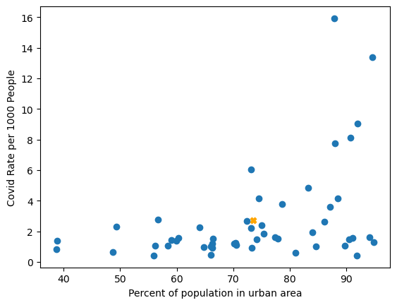
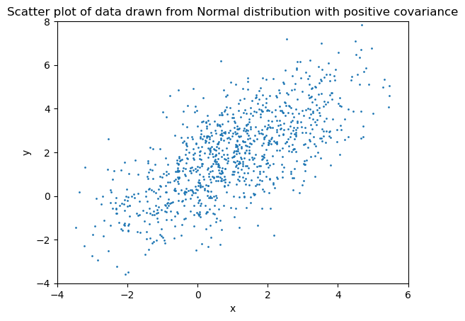
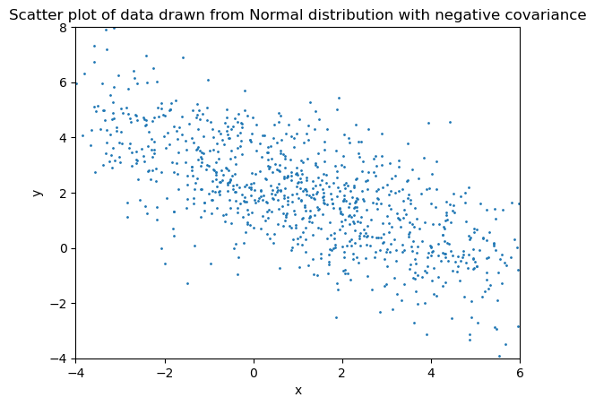
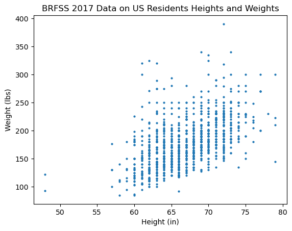
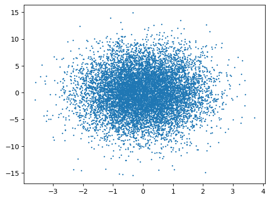
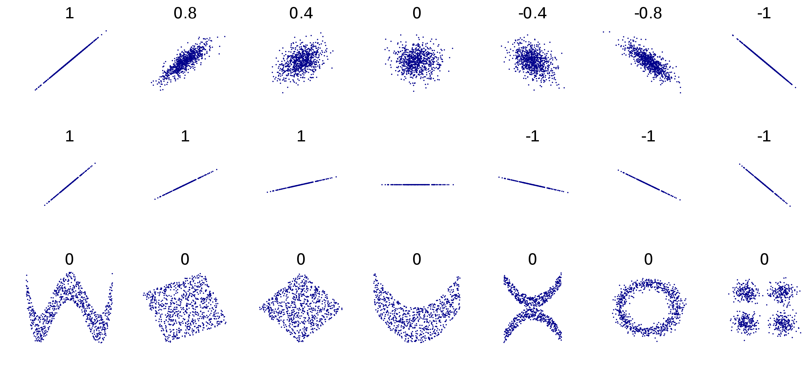

Summary Statistics for Vector Data
Contents
11.3. Summary Statistics for Vector Data#
One of the advantages of working with vectors of data is that allows us to efficiently analyze that data. In this section, we review techniques for computing summary statistics with vector data, and we introduce a new summary statistic that provides a measure of how different data depend on each other. We start by introducing the use of matrices to facilitate working with multiple vectors of data in NumPy.
In this section, we will revisit the Covid data set from ../03-first-data/intro and show how to use both Pandas and NumPy techniques to compute summary statistics on the data. Let’s start by loading the data into a dataframe:
import pandas as pd
df = pd.read_csv(
"https://raw.githubusercontent.com/jmshea/"
+ "Foundations-of-Data-Science-with-Python/main/"
+ "03-first-data/covid-merged.csv"
)
df.head()
| state | cases | population | gdp | urban | |
|---|---|---|---|---|---|
| 0 | Alabama | 7068 | 4903185 | 230750.1 | 59.04 |
| 1 | Alaska | 353 | 731545 | 54674.7 | 66.02 |
| 2 | Arizona | 7648 | 7278717 | 379018.8 | 89.81 |
| 3 | Arkansas | 3281 | 3017804 | 132596.4 | 56.16 |
| 4 | California | 50470 | 39512223 | 3205000.1 | 94.95 |
This data frame has five columns. For each state, the data set contains:
the cumulative cases up to April 30, 2020,
the total population of the state as of 2019,
the GDP of the state for the fourth quarter of 2019, and
the percentage of the population living in urban areas as of 2010 (the most recent data available).
We will set the ‘state’ column to be the index:
df.set_index('state', inplace=True)
df.head()
| cases | population | gdp | urban | |
|---|---|---|---|---|
| state | ||||
| Alabama | 7068 | 4903185 | 230750.1 | 59.04 |
| Alaska | 353 | 731545 | 54674.7 | 66.02 |
| Arizona | 7648 | 7278717 | 379018.8 | 89.81 |
| Arkansas | 3281 | 3017804 | 132596.4 | 56.16 |
| California | 50470 | 39512223 | 3205000.1 | 94.95 |
Let’s also add a column that normalizes the cases per 1000 people:
df["cases_norm"] = df["cases"] / (df["population"] / 1000)
We can consider each column of this dataframe to be a vector of data. In fact, it is easy to convert any column to a vector by just passing the column to np.array(). For example, we can create a vector of the number of cases like this:
import numpy as np
cases = np.array(df['cases'])
print(cases)
[ 7068 353 7648 3281 50470 15207 27700 4734 33683 25431
609 2016 52918 18099 7145 4305 4708 28044 1095 21825
62205 41348 5136 6815 7563 452 4332 5053 2146 118652
3411 309696 10507 1067 18027 3618 2510 48224 8621 6095
2450 10506 29072 4672 866 15848 14814 1126 6973 559]
This offers us flexibility in working with data because it makes it easy to work with all of the tools that NumPy offers.
11.3.1. From Dataframes to Matrices#
Recall from Chapter 1 that a matrix is a two-dimensional table of numbers. Matrices are special cases of arrays, which can have any number of dimensions. When the values in our dataframe are all numeric, we can convert our dataframe directly into a two-dimension NumPy array:
covid_array = df.to_numpy()
This array has a lot of rows, so let’s print the first five. We can do this using indexing. By using the index range :5, we will get the first five rows:
covid_array[:5]
array([[7.06800000e+03, 4.90318500e+06, 2.30750100e+05, 5.90400000e+01,
1.44151200e+00],
[3.53000000e+02, 7.31545000e+05, 5.46747000e+04, 6.60200000e+01,
4.82540377e-01],
[7.64800000e+03, 7.27871700e+06, 3.79018800e+05, 8.98100000e+01,
1.05073463e+00],
[3.28100000e+03, 3.01780400e+06, 1.32596400e+05, 5.61600000e+01,
1.08721441e+00],
[5.04700000e+04, 3.95122230e+07, 3.20500010e+06, 9.49500000e+01,
1.27732626e+00]])
Compare the values in covid_array with the values in the dataframe. Each column in df has been converted into a column of the numpy array covid_array. Note that all of the data has been converted to floating point because a NumPy array can only have one data type, and the percent urban data requires floating point.
Note that each data feature (i.e., number of cases, population, GDP, percent urban) occupies one of the columns of the Numpy array. The entries in this matrix can be indexed by row and then column. For instance, since row 4 corresponds to California and column 1 corresponds to population, we can retrieve the population of California as follows
covid_array[4,1]
39512223.0
We can get all the data for California using two different indexing approaches. If we omit the column, we will get the whole row:
covid_array[4]
array([5.04700000e+04, 3.95122230e+07, 3.20500010e+06, 9.49500000e+01,
1.27732626e+00])
As an alternative, we can pass just a colon as the range to indicate to retrieve all the values in that dimension:
covid_array[4, :]
array([5.04700000e+04, 3.95122230e+07, 3.20500010e+06, 9.49500000e+01,
1.27732626e+00])
Using : for the column index is not particular helpful, as we could have just omitted it. But if we want to retrieve a column, then it becomes very useful. To get all the population data, we can use : as the index of the rows and 1 as the column index:
populations = covid_array[:, 1]
print(populations)
[ 4903185. 731545. 7278717. 3017804. 39512223. 5758736. 3565287.
973764. 21477737. 10617423. 1415872. 1787065. 12671821. 6732219.
3155070. 2913314. 4467673. 4648794. 1344212. 6045680. 6892503.
9986857. 5639632. 2976149. 6137428. 1068778. 1934408. 3080156.
1359711. 8882190. 2096829. 19453561. 10488084. 762062. 11689100.
3956971. 4217737. 12801989. 1059361. 5148714. 884659. 6829174.
28995881. 3205958. 623989. 8535519. 7614893. 1792147. 5822434.
578759.]
Note that some NumPy methods expect each data feature to be in a different row, while the Pandas dataframe to_numpy() method puts each data feature into a different column. We can transpose the matrix to interchange the rows and columns:
DEFINITION
- transpose#
Interchange the rows and columns in a matrix. For a matrix \(\mathbf{M}\), the transpose is denoted by \(\mathbf{M}^{T}\) satisfies
\[\begin{equation*} \mathbf{M}^T [i,j] = \mathbf{M}[j,i] ~~~ \forall i,j.\end{equation*}\]
We can get the transpose of a NumPy matrix by appending .T. Because covid_array.T has 50 columns, I only print the first 5 below:
print(covid_array.T[:,:5])
[[7.06800000e+03 3.53000000e+02 7.64800000e+03 3.28100000e+03
5.04700000e+04]
[4.90318500e+06 7.31545000e+05 7.27871700e+06 3.01780400e+06
3.95122230e+07]
[2.30750100e+05 5.46747000e+04 3.79018800e+05 1.32596400e+05
3.20500010e+06]
[5.90400000e+01 6.60200000e+01 8.98100000e+01 5.61600000e+01
9.49500000e+01]
[1.44151200e+00 4.82540377e-01 1.05073463e+00 1.08721441e+00
1.27732626e+00]]
11.3.2. Averages, Medians, and Variances#
We often use the average (sample mean), median, and variance as summary statistics for individual data features. Both Pandas and NumPy have methods for calculating these different features, but they occasionally have some differences in their behavior. In this section, I show how to use each method and point out any behaviors that users need to be aware of.
Let’s start with Pandas. The Pandas dataframe object has methods called mean(), median(), and var(), which calculate the average, median, and variance, respectively. When called on the whole dataframe, it will calculate these values for each column of numerical data. Examples for the Covid dataframe are shown below:
df.mean()
cases 2.137406e+04
population 6.550675e+06
gdp 4.296362e+05
urban 7.358180e+01
cases_norm 2.718524e+00
dtype: float64
df.median()
cases 7.020500e+03
population 4.558234e+06
gdp 2.551785e+05
urban 7.373500e+01
cases_norm 1.540303e+00
dtype: float64
df.var()
cases 2.189225e+09
population 5.460149e+13
gdp 3.134142e+11
urban 2.121263e+02
cases_norm 9.898749e+00
dtype: float64
In Section 9.4 we introduced two different estimates for the variance:
As a reminder, the corresponding estimator, \(S_{n-1}^{2}\) is an unbiased estimator for the variance, but it does have a higher mean-squared error than the biased estimator.
A quick check of the help for df.var() will indicate that it is \(s_{n-1}^{2}\), the unbiased estimate.
Now, let’s see how to perform these operations on a NumPy array, where each column represents a different data feature. As with Pandas, NumPy arrays have mean() and var() methods, but they do not have a median() method, and they might not give us the results we expect.
Let’s start with the mean() method:
covid_array.mean()
1400352.4120647903
Rather than return the average for each column, the mean() method by default finds the average for all of the values in the array. To specify that we want the mean() for each column, we need to specify that the mean should be computed across the rows, which is axis 0. If we pass the axis=0 keyword argument, we get back a vector of the feature means that has the same values that we found with Pandas.
covid_array.mean(axis=0)
array([2.13740600e+04, 6.55067548e+06, 4.29636220e+05, 7.35818000e+01,
2.71852395e+00])
The average can be efficiently calculated using vector operations. For instance, the average can be written as
Let’s check that using the ‘cases’ feature:
n = len(df['cases'])
cases_avg = 1/n * np.ones(n) @ df['cases']
print(f'Avg. number of cases per state = {cases_avg: .1f}')
Avg. number of cases per state = 21374.1
We can actually find the averages of all of the columns simultaneously using matrix multiplication, but we defer that discussion to Chapter 14.
Although NumPy arrays do not have a median() method, NumPy does offer a np.median() function to get the medians. Again, we need to specify that the median is over axis 0:
np.median(covid_array, axis=0)
array([7.0205000e+03, 4.5582335e+06, 2.5517855e+05, 7.3735000e+01,
1.5403029e+00])
Finally, we can use the NumPy array’s var() method to find the variances:
covid_array.var(axis=0)
array([2.14544021e+09, 5.35094565e+13, 3.07145961e+11, 2.07883783e+02,
9.70077394e+00])
Note that these variances do not match the ones from Pandas. That is because NumPy returns the \(s_{n}^{2}\) estimate by default. To get the unbiased estimator, we need to pass the keyword argument ddof=1. Here, ddof stands for differential degrees of freedom, and we are telling it that since the mean is being estimated, that it should subtract one degree of freedom, which results in the \(s_{n-1}^{2}\) estimate:
covid_array.var(ddof=1, axis=0)
array([2.18922470e+09, 5.46014863e+13, 3.13414246e+11, 2.12126309e+02,
9.89874892e+00])
Like the average/sample mean, the variance can also be written as a dot product:
For the cases feature, this can be implemented as
cases_var = 1/(n-1) * (df['cases'] - cases_avg) \
@ (df['cases'] - cases_avg)
print(f'Variance of cases = {cases_var: .1f}')
Variance of cases = 2189224703.3
The fact that NumPy returns the means as an array is not just a convenience. If we consider each data point to be a vector of data, then the mean of those vectors is the vector of the means.
To illustrate this concept, let’s look at plot two features against each other along with the mean vector. The figure below shows the Covid rate per 1000 people as a function of the percent of the population that live in an urban area. The average value of these two features is shown by an orange x.
import matplotlib.pyplot as plt
plt.scatter(df["urban"], df["cases_norm"])
plt.xlabel("Percent of population in urban area")
plt.ylabel("Covid Rate per 1000 People");
plt.scatter(df['urban'].mean(), df['cases_norm'].mean(),
color='orange', marker='X')
<matplotlib.collections.PathCollection at 0x7f97030cabe0>

Note from the scatter plot that there seems to be a general trend that the Covid rate increases withe the percentage of the population that lives in an urban area. However, the statistics that we have covered up to now are not able to measure this dependence because they operate on one data feature separately. In the following section, we introduce new summary statistics that can measure dependence among the data features.
11.3.3. Measuring Dependence through Moments: Covariances, and Correlations#
To measure dependence between two features, we generalize the concept of variance. The math will be easier if we start with random variables. Let \(X\) and \(Y\) be random variables. Then the variances of these random variables are
We create a new joint moment called covariance that combines these two:
DEFINITION
- covariance (random variables)#
For random variables \(X\) and \(Y\), the covariance is the joint moment given by
\[\begin{equation*} \operatorname{Cov}(X, Y) = E \left[ \left( X - E[X]\right) \left( Y- E[Y]\right) \right]. \end{equation*}\]
It can be shown that if \(X\) and \(Y\) are independent random variables, then \(\operatorname{Cov}(X, Y) =0\). However, the converse is not true: \(\operatorname{Cov}(X, Y) =0\) does not mean that \(X\) and \(Y\) are independent.
Roughly speaking, a positive covariance indicates that the values of \(X-E[X]\) and \(Y-E[Y]\) obtained in a single experiment “tend” to have the same sign. For example, the data below are drawn from a Normal distribution with positive covariance:

Similarly, a negative covariance indicates that the values of \(X-E[X]\) and \(Y-E[Y]\) obtained in a single experiment “tend” to have the opposite sign. The data below are drawn from a Normal distribution with negative covariance:

Computing covariance for random variables requires understanding joint probability distributions – this topic is outside the scope of this class. However, we will compute the covariance when we are working with vectors of data.
If \(\{x_i\}\) and \(\{y_i\}\) are sample data from some random variables \(X\) and \(Y\), then the unbiased (sample) covariance is
DEFINITION
- covariance (data vectors)#
For \(n\)-vectors \(\mathbf{x}\) and \(\mathbf{y}\), the unbiased sample covariance is given by
\[\begin{equation*} \operatorname{Cov}( \mathbf{x}, \mathbf{y}) = \frac{1}{n-1} \sum_{i=0}^{n-1} \left(x_i - \overline{x}\right) \left(y_i - \overline{y}\right) . \end{equation*}\]
Note that the covariance of a feature with itself is just the variance of that feature. As with variance, the covariance can be calculated efficiently using dot product:
Pandas dataframes have a cov() method that return all the pairwise covariances:
df.cov()
| cases | population | gdp | urban | cases_norm | |
|---|---|---|---|---|---|
| cases | 2.189225e+09 | 1.566015e+11 | 1.410528e+10 | 2.428692e+05 | 1.195509e+05 |
| population | 1.566015e+11 | 5.460149e+13 | 4.044665e+12 | 4.833276e+07 | 3.638665e+06 |
| gdp | 1.410528e+10 | 4.044665e+12 | 3.134142e+11 | 3.787249e+06 | 4.303970e+05 |
| urban | 2.428692e+05 | 4.833276e+07 | 3.787249e+06 | 2.121263e+02 | 1.945257e+01 |
| cases_norm | 1.195509e+05 | 3.638665e+06 | 4.303970e+05 | 1.945257e+01 | 9.898749e+00 |
NumPy arrays do not have a covariance method. However, NumPy does have a np.cov() function for computing the pairwise covariances. It expects each feature to be in a row, so we need to transpose the data before calling np.cov(). Fortunately (but somewhat inconsistently), numpy uses the unbiased estimator for covariance by default:
np.cov(covid_array.T)
array([[2.18922470e+09, 1.56601457e+11, 1.41052773e+10, 2.42869243e+05,
1.19550942e+05],
[1.56601457e+11, 5.46014863e+13, 4.04466480e+12, 4.83327588e+07,
3.63866512e+06],
[1.41052773e+10, 4.04466480e+12, 3.13414246e+11, 3.78724946e+06,
4.30397008e+05],
[2.42869243e+05, 4.83327588e+07, 3.78724946e+06, 2.12126309e+02,
1.94525706e+01],
[1.19550942e+05, 3.63866512e+06, 4.30397008e+05, 1.94525706e+01,
9.89874892e+00]])
The result is a matrix whose \(i,j\)th entry give the covariance between feature \(i\) and feature \(j\). The \(i,i\)th entries are the variances. This type of matrix is called a covariance matrix.
NumPy’s np.cov() can also calculate the covariance for two separate vectors. For instance, we can get the covariance between the features 3 and 4 as follows:
np.cov(covid_array[:,3], covid_array[:,4])
array([[212.12630894, 19.45257063],
[ 19.45257063, 9.89874892]])
One problem with covariances is that it is hard to interpret because it can take on very large or very small values, depending on the variance that is present in the data. To get around this, we often use a normalized version of the covariance called the correlation coefficient. As with covariance, we start by defining it in terms of random variables:
DEFINITION
- correlation coefficient (random variables)#
For random variables \(X\) and \(Y\), the correlation coefficient is the given by
\[\begin{equation*} \rho = \frac{ \operatorname{Cov}(X, Y)}{\sigma_X \sigma_Y}, \end{equation*}\]where \(\sigma_X\) and \(\sigma_Y\) are the standard deviations of \(X\) and \(Y\), respectively.
It can be shown that \(|\rho| \le 1\). Correlation coefficients that are closer to 1 generally indicate greater dependence among the variables.
The correlation coefficient for data vectors is usually denoted by \(r\) or \(R\) and is given by
DEFINITION
- correlation coefficient (data vectors)#
For \(n\)-vectors \(\mathbf{x}\) and \(\mathbf{y}\), the correlation coefficient or Pearson’s correlation coefficient is given by
\[\begin{equation*} r = \frac{ \operatorname{Cov}(\mathbf{x}, \mathbf{y})}{\sigma_x \sigma_y}, \end{equation*}\]where \(\sigma_x\) and \(\sigma_y\) are the standard deviations of \(\mathbf{x}\) and \(\mathbf{y}\), respectively.
Pandas dataframes have a corr() method for computing the pairwise correlation coefficients:
df.corr()
| cases | population | gdp | urban | cases_norm | |
|---|---|---|---|---|---|
| cases | 1.000000 | 0.452948 | 0.538489 | 0.356394 | 0.812115 |
| population | 0.452948 | 1.000000 | 0.977734 | 0.449099 | 0.156513 |
| gdp | 0.538489 | 0.977734 | 1.000000 | 0.464480 | 0.244354 |
| urban | 0.356394 | 0.449099 | 0.464480 | 1.000000 | 0.424512 |
| cases_norm | 0.812115 | 0.156513 | 0.244354 | 0.424512 | 1.000000 |
Note that the correlation coefficient is much easier to interpret than the covariance. If we look at the normalized cases, we can see that it is most correlated with the non-normalize number of cases, followed by the percent of the population living in urban areas. The correlation with GDP and the state’s population are lower. The correlation coefficients give us an easy way to look for dependence during exploratory data analysis.
The equivalent function in Numpy is np.corrcoef(). Here, corrcoef is short for correlation coefficient. As with np.cov(), the data features are expected to be in the rows of the array, so we have to transpose the array before passing it to np.corrcoef():
np.corrcoef(covid_array.T)
array([[1. , 0.45294805, 0.53848932, 0.35639375, 0.81211528],
[0.45294805, 1. , 0.97773449, 0.449099 , 0.15651274],
[0.53848932, 0.97773449, 1. , 0.46448028, 0.24435415],
[0.35639375, 0.449099 , 0.46448028, 1. , 0.42451162],
[0.81211528, 0.15651274, 0.24435415, 0.42451162, 1. ]])
As with np.cov(), we can use np.corrcoef() to calculate the correlation coefficient between two vectors, like
np.corrcoef( covid_array[:,3], covid_array[:,4])
array([[1. , 0.42451162],
[0.42451162, 1. ]])
Another example
“The Behavioral Risk Factor Surveillance System (BRFSS) is the nation’s premier system of health-related telephone surveys that collect state data about U.S. residents regarding their health-related risk behaviors, chronic health conditions, and use of preventive services.”: https://www.cdc.gov/brfss/index.html
The BRFSS contains 450015 records, with over 350 variables. It takes a LONG time to load and work with, so I have pulled out 2 variables and sampled 5000 records for us to work with. The data we will use is
HEIGHT: I created a new computed variable that I have computed as the height in inches
WEIGHT2: The reported weight in pounds
I dropped those entries that did not have valid values or were reported in metric units (a small percentage of the total). The resulting dataframe is stored in the pickle file brfss17.pickle:
import pickle
with open("brfss17.pickle","rb") as file:
brfss=pickle.load(file)
brfss.head()
| HEIGHT | WEIGHT2 | |
|---|---|---|
| 435546 | 64.0 | 180.0 |
| 191440 | 64.0 | 160.0 |
| 236807 | 64.0 | 210.0 |
| 2422 | 64.0 | 155.0 |
| 166257 | 73.0 | 220.0 |
Let’s start by plotting our data. For this data, I am interested in the dependence between height and weight, so I plot the weights as a function of the heights using a scatter plot:
plt.scatter(brfss['HEIGHT'], brfss['WEIGHT2'], 4)
plt.xlabel('Height (in)')
plt.ylabel('Weight (lbs)')
plt.title('BRFSS 2017 Data on US Residents Heights and Weights');

Before we determine the numerical values of the covariance and correlation coefficient for this pair of features, try to answer the following questions:
What should the sign of the covariance between Height and Weight be?
What should the magnitude of the correlation coefficient be?
Let’s start by calculating the covariance matrix:
brfss.cov()
| HEIGHT | WEIGHT2 | |
|---|---|---|
| HEIGHT | 17.628628 | 92.671004 |
| WEIGHT2 | 92.671004 | 1819.515627 |
Hopefully you guessed that the covariance is positive. People who are taller tend to weight more than people who are shorter, so these features tend to move together.
Now let’s check the correlation coefficient:
brfss.corr()
| HEIGHT | WEIGHT2 | |
|---|---|---|
| HEIGHT | 1.000000 | 0.517436 |
| WEIGHT2 | 0.517436 | 1.000000 |
The correlation coefficient is 0.46, which indicates a fairly strong dependence between height and weight.
Finally, let’s look at what happens for some independent data. Below I generate completely separate samples of Normal random variables with different variances and show a scatter plot of the data:
import scipy.stats as stats
Y=stats.norm()
Z=stats.norm(scale=4)
y=Y.rvs(size=10_000)
z=Z.rvs(size=10_000)
plt.scatter(y,z, 1);

Since the shape of the scatter plot is circular, there is no clear direction of dependence. Let’s check the numerical value of the covariance and correlation coefficient:
np.cov(y,z), np.corrcoef(y,z)
(array([[ 1.01217719, 0.05824538],
[ 0.05824538, 15.68893564]]),
array([[1. , 0.01461627],
[0.01461627, 1. ]]))
Note the very small sample covariance and very small correlation coefficient. When random variables are independent, their covariance is zero; however, the sample covariance will generally not be exactly zero.
More examples of datasets with different correlations are shown in this image from the Wikipedia page for correlation (https://en.wikipedia.org/wiki/Correlation):

In the next section, we use the concepts of covariance and correlation to help find the best functional relationships between data features to minimize an error metric.